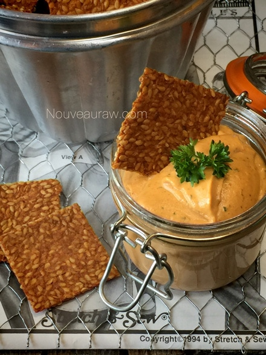

Spicy BBQ Flax Crackers

~ raw, vegan, gluten-free, nut-free ~
I know you heard me say this before but flax crackers are a staple in our household. I keep them in a large glass container on the kitchen island. When you remove the lid it makes a sound like, “Ching!” I bet I hear “ching!” at least 10x a day as my husband snacks on them.
To be honest, it is music to my ears. I love the fact that he chooses them to snack on. I would rather hear “ching!” than the rustling of a potato chip bag. The problem when I make flax crackers (well not sure that it is really a problem) but I tend to never follow a recipe.
I just throw ingredients together that speak to me when I go through the produce drawers in the fridge. I never made a BBQ flavored one though so I was excited to make these when I had some leftover raw BBQ sauce in the fridge. Thus this recipe was born.
This is a wonderful cracker to pair with just about any cheese or dip. It has a nice kick to it (providing you use enough cayenne) but yet it is also great in providing a neutral base. It is thin and snappy… I hope you enjoy it as much as I did.
The key ingredient as you might gather from the title is flax! I bet you thought that I was going to say BBQ, didn’t ya? :) Whereas the BBQ flavor is what makes this cracker taste amazing… we wouldn’t have a cracker without the flax. So for those of you who are new to using it, let me share a few tidbits.
Flax seeds… touted for their amazing nutrients, are also known as the “holy binder” of raw foods. So what makes them so magical when it comes to using them in recipes? For being such a tiny, itty bitty seed, it has an outer hull consisting of five layers.
The Wonders of Flax
The outermost layer, called the epiderm, contains the mucilaginous material that is activated in the presence of liquid. Give it a stir and a little time to relax and bam (!) you have a slimy material known as mucilage or gel.
Flax seeds contain both the soluble and insoluble types and can be very bulk-forming in the colon. This process can be a real blessing for those who suffer constipation but it can also hinder movement when you don’t drink enough water with them.
Yields 6 1/2 cups batter
- 2 cups flax seeds
- 2 Tbsp chia seeds
- 1 cup ground flax seeds
- 3 1/2 cups water
- 1 cup sun-dried tomatoes
- 1/2 cup Medjool dates
- 1 cup soaking water tomatoes and dates
BBQ sauce:
- 2 Tbsp olive oil
- 3 Tbsp coconut aminos
- 2 Tbsp raw apple cider vinegar
- 1 tsp smoked paprika
- 2 tsp ground cumin
- 1 1/2 tsp chipotle powder
- 1 tsp garlic powder
- Pinch cayenne
Preparation:
Soaking preparation:
- In a large bowl combine the flax seeds, chia seeds, ground flax, and 3 1/2 cups of water. Set aside for at least 2 hours.
- Stir really well, working out any lumps and clumps of flax.
- During the soaking process, give the mixture a quick stir to work the water into the seeds.
- If you are new to working with flax seeds, they will absorb the water completely, creating mucilage. You won’t be draining or rinsing any of this way. This mucilage is what will give this recipe the binding power it needs to create the cracker.
- The soaking process making the nutrients from the seeds absorbable in our bodies.
- At the same time, but in a separate bowl, place the sun-dried tomatoes, dates, and 1 cup of water. Set aside so they can soften, which will aid in the blending process.
- Do not use sun-dried tomatoes that are packed in oil. If you must, then omit the olive oil.
- Once done soaking, drain but reserve the soak water. Be sure to hand-squeeze the excess water from them.
BBQ sauce:
- In a high-speed blender combine the soaked and drained sun-dried tomatoes and dates. Add the olive oil, coconut aminos, paprika, cumin, chipotle, garlic, and cayenne. Blend until creamy.
- If the sauce is just too thick to move in the blender, add 1 Tbsp of the soak water that you had reserved until the sauce is able to blend. But keep it on the thick side.
Assembly:
- Pour the BBQ sauce into the bowl along with the flax seeds. Stir really well, making sure the sauce coats all of the seeds.
- Line the dehydrator sheets with non-stick sheets or parchment paper.
- Do not use wax, or the batter will stick to it.
- I use a 9 tray Excalibur which has square trays.
- Pour 2 cups of the batter onto each sheet (3 1/2) and spread to about 1/4″ thick.
- I like to use an off-set spatula.
- Dehydrate at 145 degrees for 1 hour, then reduce115 degrees (F) for about 6 hours, flip the tray over onto the mesh sheet, and peel off the non-stick sheet.
- If the batter is still sticking to the non-stick sheet, then let it continue to dry a bit longer. Don’t force the issue.
- Lightly score the batter into cracker shapes and slide it back into the dehydrator for 6+ hours, until the crackers are completely dry.
- Once done and cooled, snap the crackers apart and store them in an airtight container. If you forgot to score the crackers, no biggie, just break them into cracker-sized pieces.
- If properly stored, they should keep for 2-4 weeks.
Culinary Explanations:
- Why do I start the dehydrator at 145 degrees (F)? Click (here) to learn the reason behind this.
- When working with fresh ingredients it is important to taste test as you build a recipe. Learn why (here).
- Don’t own a dehydrator? Learn how to use your oven (here). I do however truly believe that it is a worthwhile investment. Click (here) to learn what I use.

© AmieSue.com